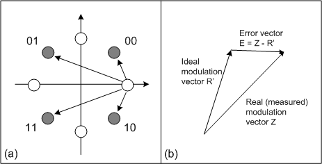

DEVM Calculation
In the π/4-DQPSK and 8DPSK modulation schemes, the modulation vector corresponds to the distance between two points in the constellation diagram, irrespective of the axes and the origin. See figure below, part (a). The differential error vector magnitude (DEVM) is calculated from the magnitude of the differential error vector, in analogy to the ordinary EVM (part (b)).

Definition of the DEVM
In the "Differential Error Vector Magnitude" view, the DEVM is expressed as the ratio |E| / |R'|. To obtain the DEVM results, the R&S CMW proceeds as described in "Statistical Modulation Results (EDR)".
See also: "Modulation Accuracy"